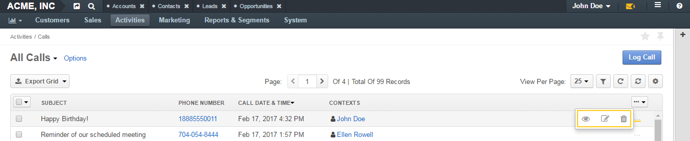

Calls Page¶
Description¶

Page Top¶
On the upper-left of the page, you can see the name of the selected grid view. The only grid view available by default for calls is All Calls (all available calls are displayed).
In the next row there is the Export Grid button. Click it to export call logs. See the Export Call Logs action description.
In the upper-right part of the page you can see the Log Call action button. Click it to make or log a call. See the Log a Call and Make a Call action descriptions.
The other grid controls are common for all grids in the application. See the Grids guide for more information on grids.
Grid¶
| Field | Description |
|---|---|
| SUBJECT | What the call was about. |
| PHONE NUMBER | A number that the call was made to / from. |
| CALL DATE&TIME | When the call was started. |
| CONTEXT | Links to the records that are somehow connected to the call. |
Inline editing within the grid is not available for calls. If you wish to change the details of a record, you should first open it and then make the necessary changes in the record edit form.
Access a Call Log¶
To view, edit, or delete a call log, click the ellipsis menu at the end of the row, and then click the corresponding icon. To view a call log, you can also click the corresponding row itself.
See the action descriptions:
Mass Actions¶
You can delete multiple calls from this page. See the Delete Multiple Calls action description.